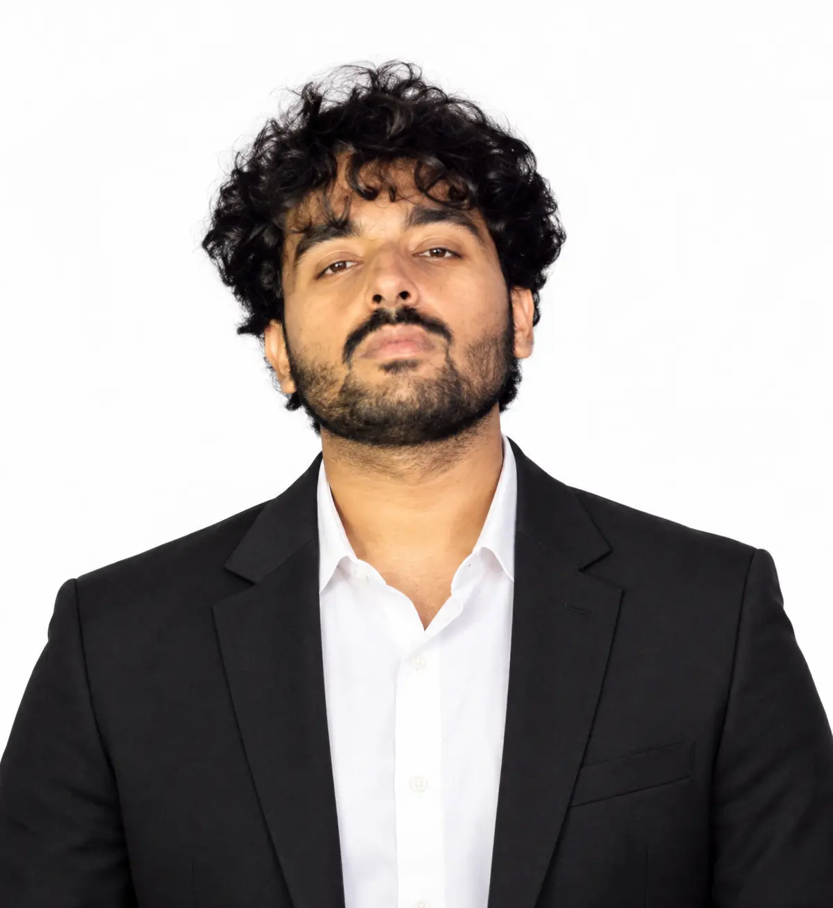

Trustworthy AI answers
How can retrieval, reranking, and clear citations help people verify an AI response against its original sources?
BACKGROUND / ABOUT ME
I’m Muhmmad Ahsan Rehman, a Software Engineering graduate from Mirpur, Pakistan. I’m interested in AI automation, useful applications, and continued learning.

MIRPUR, PAKISTAN / CLASS OF 2026
Software Engineer & AI Developer
I’m a Software Engineering graduate from MUST, Mirpur, with an interest in AI automation and building useful AI applications.
I enjoy the connection between software and intelligence: designing the application, working with data, and using AI to make information more accessible. LegalMind AI brought those interests together in my final-year project.
I’m looking for opportunities to grow through hands-on engineering work and postgraduate study, with a focus on applied AI and software development.
03 / EXPERIENCE
Internship experiences that form part of my journey from university to professional work.
Internship
Internship
04 / EDUCATION & NEXT STEPS
Mirpur University of Science and Technology
Mirpur, Azad Jammu & Kashmir, Pakistan
RESEARCH INTERESTS / LOOKING AHEAD
How can retrieval, reranking, and clear citations help people verify an AI response against its original sources?
How can English and Urdu interfaces make specialised information easier to access and understand?
Which repeated tasks benefit from deterministic rules, and where can an AI model add meaningful value?
How can testing, careful data handling, and thoughtful interfaces make intelligent applications more dependable?
TECHNICAL DIRECTION
The connections I want to develop through practical work and further study.
Web interfaces and databases form the foundation of the applications I want to build. I am interested in the complete journey from a user’s question to a useful response.
My final-year team project brought together MiniLM embeddings, Pinecone retrieval, cross-encoder reranking, and a bilingual interface. This is a direction I want to explore further.
I am interested in making repeated tasks easier, while understanding how to check the result. Clear rules, testable behaviour, and readable outputs matter alongside model capabilities.
LET’S BUILD WHAT’S NEXT